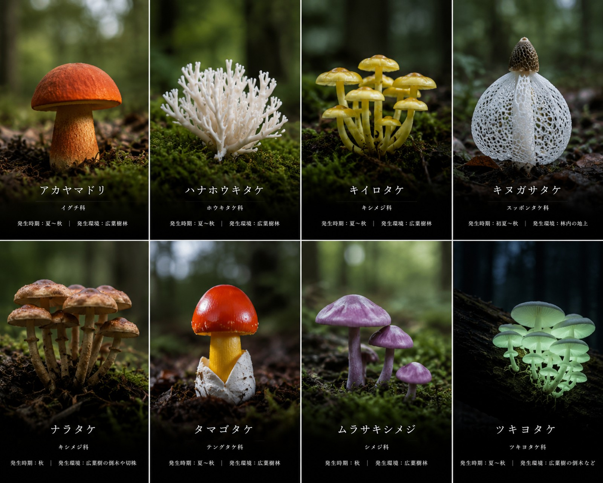

長岡 ｜ 山のキノコ採集アーカイブ
長岡の森が育む、
小さな命の記録。
新潟県・長岡市の山を、約20年。
石原巖が歩いて出会ったキノコたちの、
採れた日・場所・環境・覚え書きを一枚ずつ。
雪国の森が育てた、小さな命の図鑑です。
ABOUT
石原 巖 について
新潟県西頸城郡名立町（現・上越市名立区）の生まれ。 雪深い越後の山と海に育ち、長岡市に移り住んでからは 周辺の山を二十年近く歩き続けてきました。 春の雪解けから晩秋の初雪前まで、季節ごとに姿を変える森のキノコを訪ね、 採れた日と場所、天気、生えていた木、味や食べ方を一つひとつ書き留めています。
キノコは同じ木に毎年のように顔を出すもの。 足が覚えた「シロ」を巡り、似た毒キノコを見分けながら、 山の恵みと危うさの両方を記録してきました。 このサイトは、その二十年分の覚え書きをまとめたものです。
- 出身
- 新潟県西頸城郡名立町（現・上越市名立区）
- 採集地
- 新潟県 長岡市 周辺の山
- 記録期間
- 約20年（since 2006）
- 記録数
- ―

GALLERY
キノコの記録
採集した日付や場所、生えていた環境とともに記録しています。
気になるキノコをタップすると、詳しい記録をご覧いただけます。
COLUMN
コラム
キノコ歩き二十年の覚え書き。採集のコツ、季節の楽しみ、毒キノコの見分け方など。